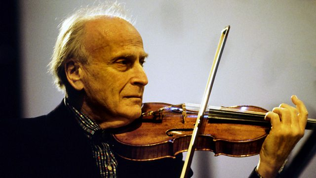

Como tudo começou
Enquanto data comemorativa não oficial, o Dia Internacional da Música não foi criação de nenhum governo, mas uma data proposta por uma organização conhecida como International Music Council (IMC), vinculada à Unesco e criada, em 1949, com o objetivo de atuar pelo desenvolvimento e popularização da música, além de utilizá-la em programas de promoção da paz. Essa data comemorativa foi criada em 1975, e sua primeira comemoração foi idealizada por Yehudi Menuhin, músico e presidente do IMC na ocasião. Menuhin agiu para cumprir o que havia sido estabelecido pelo IMC dois anos antes — a necessidade de se criar uma data comemorativa internacional para a música.
